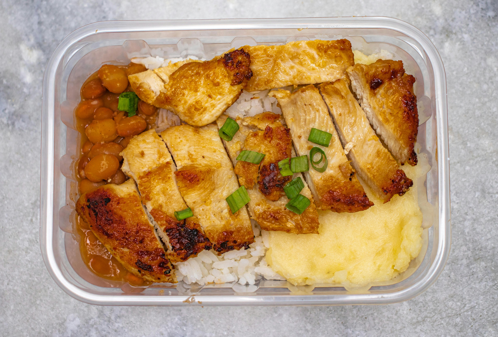

Air Fryer Chicken and Rice

Description
A meal prep style chicken and rice dish. Useing the Airfryer to make frozen chicken crispy and juicy. With buttery stove top brown rice and microwaved broccoli.
Ingredients
- One large frozen chicken breast
- One cup frozen broccoli
- 1/2 a cup of brown rice
- 2 tablespoon olive oil
- 1 1/2 tablespoon seasoning blend
- 1/2 tablespoon butter
- 1/4 tablespoon salt
- wash rice three times
- add rice to quarter sauce pan with twice as much water
- bring rice to boil
- reduce rice to low and let cook till no water remains
- preheat air fryer to 400 F
- put frozen chicken breast in air fryer
- add the olive oil and seasoning in a small bowl
- after 4 min in airfryer brush the oil mixture on the both sides chicken
- remove chicken when it's at 155 degrees internal
- let chicken rest for 5 min
- serve with side of steamed broccli
Home